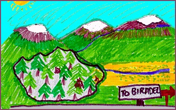
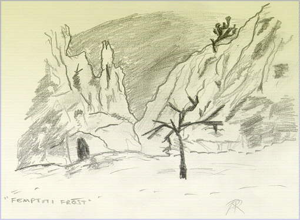

| |

| |

| |

| |

| |

|

The land of Biradel was a peaceful land. It's people were peaceful people. Furthering of knowledge was their sole purpose, and disagreement was rare. Being frarpic, that is, being bearded and wise, the populous was regarded by nearby villages as somewhat staid and lacking what the younger generation referred to as fneet. Outdoor conversation was limited to pleasentries and formal acknowledgement, and never was a word spoken of the terror that lurked beneath the village walls.Opus, the warrior chief of the village was the only one of the elders to converse with the infant generation of Biradel, and as such was regarded by the other elders as an outsider. They did, however, have much respect for this once great hero, for he had rid the village of all the evil that once thrived within, and banished it to the caverns of misery, never to return.
The majik was strong with Opus, and this commanded him respect from not just the Elders, but from the Chants as well. Indeed, if it were not for his reputation, there would have been many occasions on which his grisly demise would have been assured. But until the large chill of noonray, he had remained safe, if a little unstable.

If only Blue had been aware of Opus on the night of the femmptiti-frost, the disaster might have been avoided. Who knows, the lore may have remained sacred. But then there would be no story to tell, and believe me when I tell you now that there is more truth to the legend of Biradel than you dare to imagine. Take not lightly this tale, for the threat may be diminished, but the danger is not yet past.
 Story Index
Story Index |
top of page
 |

Next Chapter  |